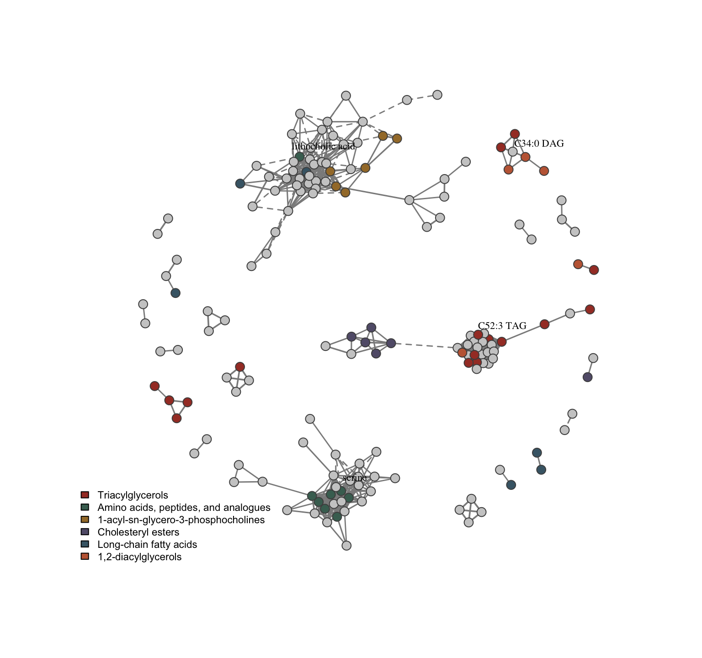

Sparse correlation networks from untargeted metabolomics data, with variational autoencoder imputation of values below the detection limit.
Metabolomics correlationreleasedRPythonGNPS
MetVAE constructs a correlation network from untargeted metabolomics data. Zeros in the abundance table are treated as values below the detection limit and imputed by a variational autoencoder. The effects of the specified sample covariates are removed, and a sparse correlation matrix between metabolite features is estimated. Pairs are retained either by Fisher z-tests with multiple-testing correction (sparse_by_p) or by the sparse estimation of correlation (SEC) estimator with a penalty selected by cross-validation (sparse_by_sec).
Platforms
Platform
Package
Install
Documentation
R
MetVAE
BiocManager::install("MATRIX-Research-Lab/MetVAE"), then torch::install_torch()
The R package is installed from GitHub; its Bioconductor submission is under review. GNPS_Local is an offline, single-user version of GNPS molecular networking with a graphical interface.
Extended tutorial
The R tutorial estimates a metabolite correlation network from the stool metabolomes of the PRISM and validation cohorts of Franzosa et al. (2019), which include patients with Crohn’s disease (CD), patients with ulcerative colitis (UC), and controls. The data are the processed tables of the curated microbiome–metabolome collection of Muller et al. (2022). The network is adjusted for diagnosis, age, and cohort, so that it describes the co-variation of metabolites within these strata.
Let \(y_{ij}\) denote the abundance of metabolite \(j\) in sample \(i\), for \(i = 1, \ldots, n\) and \(j = 1, \ldots, p\), and let \(z_{ij}\) denote its value on the centered log-ratio (CLR) scale. Let \(\mathbf{x}_i\) denote the covariate vector of sample \(i\). MetVAE assumes the left-censored normal model
in which a zero is recorded when the abundance falls below the detection limit. The parameters \(\mu_j\), \(\boldsymbol{\gamma}_j\), and \(\sigma_j\) are estimated under censoring, and the covariate effects are removed. A variational autoencoder trained on the adjusted data imputes the censored values \(M\) times. For imputation \(s\), let \(\tilde{z}^{(s)}_{ij}\) denote the completed adjusted data. The correlation of metabolites \(j\) and \(k\) is estimated from the variance of their log ratio,
and the estimate \(\hat{r}_{jk}\) is the mean of \(\hat{r}^{(s)}_{jk}\) over the \(M\) imputations, after entries with \(|\hat{r}^{(s)}_{jk}|\) below a threshold are set to zero.
Two procedures produce a sparse network. The first tests \(H_0: r_{jk} = 0\) with
where \(\hat{\mathbf{R}}_0\) is the matrix of the estimates \(\hat{r}_{jk}\), and the penalty \(\rho\) is selected by cross-validation.
Data
The metabolomics table has one row per sample and one column per LC-MS feature. The tutorial retains the features with a compound name. Features with the same HMDB identifier, or without one and with names that differ only by a trailing asterisk, are treated as one compound, and for each compound the feature with the smallest proportion of zeros is retained.
Figure 3: Cross-validation error of SEC by penalty. The dashed line marks the selected penalty.
The grid of the penalty is \(\rho = c \sqrt{\log p / n}\) for the listed values of \(c\). The validation error decreases as \(\rho\) decreases over the whole grid, and cross-validation selects the smallest value, \(\rho =\) 0.00803. In these data the penalty therefore shrinks the estimate little, and the zeros of the SEC estimate arise mainly from the thresholds of get_corr() (0.2) and sparse_by_sec() (0.1).
Results
The pairs retained by SEC, with the strongest correlations first:
Metabolite pairs with the largest absolute SEC correlation.
metabolite_1
metabolite_2
r
class_1
class_2
guanosine
8-hydroxy-deoxyguanosine
0.94
Purine nucleosides
Purine nucleosides
leucine
valine
0.94
Amino acids, peptides, and analogues
Amino acids, peptides, and analogues
C52:3 TAG
C54:4 TAG
0.94
Triacylglycerols
Not assigned
alanine
leucine
0.93
Amino acids, peptides, and analogues
Amino acids, peptides, and analogues
alanine
valine
0.93
Amino acids, peptides, and analogues
Amino acids, peptides, and analogues
C22:1 MAG
7-hexadecenoic acid methyl ester
0.93
1-monoacylglycerols
Fatty acid methyl esters
C53:3 TAG
C56:4 TAG
0.93
Not assigned
Not assigned
uridine
8-hydroxy-deoxyguanosine
0.93
Not assigned
Purine nucleosides
C52:2 TAG
C54:4 TAG
0.92
Not assigned
Not assigned
C53:3 TAG
C54:2 TAG
0.92
Not assigned
Not assigned
C52:2 TAG
C52:3 TAG
0.92
Not assigned
Triacylglycerols
threonine
valine
0.92
L-alpha-amino acids
Amino acids, peptides, and analogues
guanosine
uridine
0.92
Purine nucleosides
Not assigned
C54:2 TAG
C56:4 TAG
0.92
Not assigned
Not assigned
C52:4 TAG
C54:5 TAG
0.92
Not assigned
Not assigned
both <- edges |>mutate(fdr =as.matrix(res_p$sparse_estimate)[cbind(metabolite_1, metabolite_2)] !=0)mean(both$fdr)
#> [1] 0.9718943
Of the pairs retained by SEC, a proportion of 0.97 are also retained by the Fisher z-tests at a false discovery rate of 0.05.
strong <-filter(edges, abs(r) >=0.7)g <-graph_from_data_frame(strong[, c("metabolite_1", "metabolite_2", "r")], directed =FALSE)top_class <-setdiff(names(sort(table(class_of[V(g)$name]), decreasing =TRUE)), "Not assigned")[1:6]palette <-setNames(c("#a63d2f", "#476e61", "#a47b36", "#625d78", "#466675", "#c26743"), top_class)V(g)$color <-coalesce(palette[class_of[V(g)$name]], "grey80")# Label the metabolite with the most pairs in each cluster of at least five metabolites.comp <-components(g)$membershiphub <-tapply(seq_len(vcount(g)), comp, function(v) v[which.max(degree(g)[v])])big <-as.integer(names(which(table(comp) >=5)))V(g)$label <-NA_character_V(g)$label[hub[as.character(big)]] <-V(g)$name[hub[as.character(big)]]set.seed(1)plot(g, layout =layout_with_fr(g), vertex.size =4, vertex.frame.color ="grey30",vertex.label.cex =0.7, vertex.label.color ="black", vertex.label.dist =1.2,edge.lty =if_else(E(g)$r >0, 1, 2), edge.color ="grey55",edge.width =2*abs(E(g)$r))legend("bottomleft", legend = top_class, fill = palette, bty ="n", cex =0.7)

Figure 4: Pairs with an absolute SEC correlation of at least 0.7. Node color is the putative chemical class; gray nodes belong to other classes. Solid edges are positive and dashed edges negative correlations.
The network has 163 metabolites and 778 pairs with an absolute correlation of at least 0.7. In each connected cluster of at least five metabolites, the metabolite with the most pairs is labeled.
Export
export_graphml() returns one igraph network per cutoff of the absolute correlation and writes each as a GraphML file, which Cytoscape reads.
The code in this tab is shown for reference and is not executed on this page. It applies the same analysis to the same data.
pip install metvae
import pandas as pdfrom metvae.model import MetVAEurl = ("https://raw.githubusercontent.com/borenstein-lab/""microbiome-metabolome-curated-data/main/data/processed_data/""FRANZOSA_IBD_2019/")meta = pd.read_csv(url +"metadata.tsv", sep="\t", index_col="Sample")fmap = pd.read_csv(url +"mtb.map.tsv", sep="\t")mtb = pd.read_csv(url +"mtb.tsv", sep="\t", index_col=0)# Features with a compound name; one feature per compound.named = fmap[fmap["Compound.Name"].notna() & fmap["Compound"].isin(mtb.columns)].copy()named["name"] = named["Compound.Name"].str.replace(r"\*+$", "", regex=True)named["key"] = named["HMDB"].fillna(named["name"])named["zero"] = (mtb[named["Compound"]] ==0).mean().valuesnamed = (named.sort_values(["key", "zero"]).drop_duplicates("key") .drop_duplicates("name"))y = mtb[named["Compound"]]y.columns = named["name"]meta["diagnosis"] = pd.Categorical(meta["Study.Group"], ["Control", "CD", "UC"])meta["cohort"] = ["PRISM"if s.startswith("PRISM") else"Validation"for s in meta.index]model = MetVAE(data=y, meta=meta[["Age", "diagnosis", "cohort"]], continuous_covariate_keys=["Age"], categorical_covariate_keys=["diagnosis", "cohort"])model.train()model.get_corr()results_p = model.sparse_by_p()results_sec = model.sparse_by_sec()
The arguments and the structure of the results are described in the package README, and the example notebooks include an analysis of a hepatocellular carcinoma data set with 7,217 metabolites.
GNPS_Local runs GNPS feature-based molecular networking on a local computer and provides MetVAE through a graphical interface. Installation and use are described in the GNPS_Local documentation.
Data sources
Franzosa EA, Sirota-Madi A, Avila-Pacheco J, et al. Gut microbiome structure and metabolic activity in inflammatory bowel disease. Nature Microbiology 4:293–305 (2019). doi:10.1038/s41564-018-0306-4
Muller E, Algavi YM, Borenstein E. The gut microbiome-metabolome dataset collection: a curated resource for integrative meta-analysis. npj Biofilms and Microbiomes 8:79 (2022). doi:10.1038/s41522-022-00345-5
Citation
Lin H, Zhang L, Lotfi A, Jarmusch A, Lee I, Kim A, Morton JT, Aksenov A. Protocol for constructing correlation-based molecular networks from large-scale untargeted metabolomics data. bioRxiv (2026). doi:10.1101/2025.04.26.649581
Related methods
SECOM: correlation between taxa in microbiome data.
TriGer: modules of features associated across two omics layers.